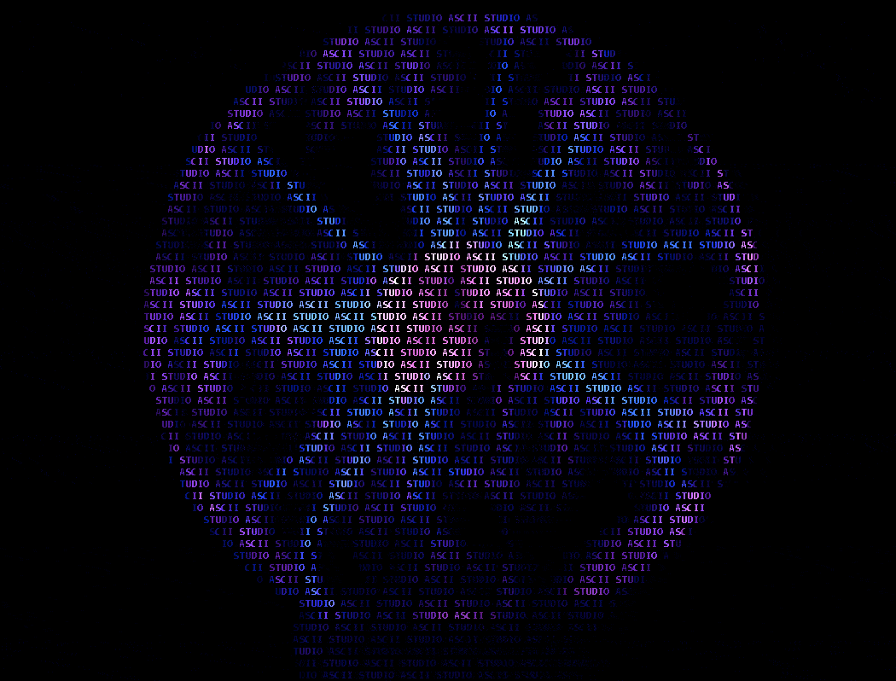

Research
Explore my scientific research and publications in astronomy, data science, and machine learning. From stellar classification to interstellar pattern recognition, discover the methodologies and findings of ongoing investigations.
